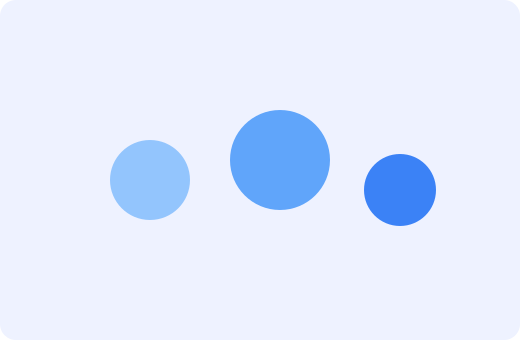

Sobre a Vsion IA
Somos uma equipe multidisciplinar especializada em transformar dados em decisões.
Nosso propósito
Apoiar empresas na jornada de IA com soluções responsáveis, mensuráveis e seguras.
- Transparência algorítmica
- Privacidade por padrão
- Foco em ROI
